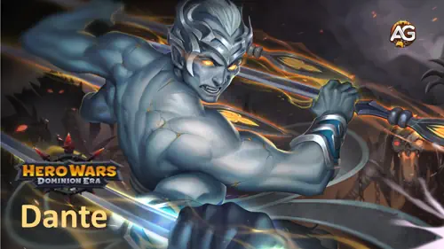
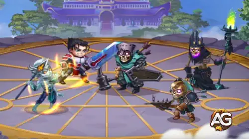
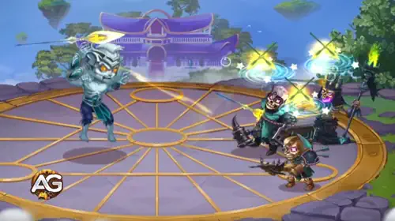

Em Hero Wars: Dominion Era, Dante se destaca como um dos atiradores mais versáteis e letais do jogo. Com seus ataques baseados em agilidade e sua posição na linha do meio, Dante combina velocidade e poder para eliminar os inimigos antes mesmo que eles alcancem seus tanques.
Seja você um iniciante ou um jogador experiente, entender como maximizar o potencial de Dante pode lhe dar uma vantagem poderosa tanto nas batalhas PvE quanto PvP.

Guia do Dante para Hero Wars: Dominion Era, um jogo desenvolvido pela Nexters.
Habilidade Instrumento do Destino do Dante, Hero Wars Dominion Era.
Previsão
Essa habilidade concede um grande bônus de Esquiva a todos os aliados por 5 segundos. Ela ajuda toda a equipe a evitar dano recebido, especialmente de atacantes fÃsicos. É crucial para a sobrevivência do time, e aprimorar essa habilidade a torna mais eficaz na proteção da equipe.
Prioridade de Evolução:2

Habilidade Previsão do Dante, Hero Wars Dominion Era.

Habilidade Algemas da Fraqueza do Dante, Hero Wars Dominion Era.
Prós e Contras do Dante com Base em Suas Habilidades
Dante se destaca em mecânicas baseadas em esquiva e dano fÃsico explosivo, tornando-se um herói poderoso e difÃcil de lidar em Hero Wars: Dominion Era. Abaixo estão seus principais pontos fortes e fracos.
Prós:
Forte Sinergia com Esquiva: A habilidade Retribuição de Dante ativa ataques extras quando ele desvia, aumentando significativamente seu dano.
Alto Dano Explosivo: Sua habilidade principal, Instrumento do Destino, causa grande dano fÃsico e atrapalha os inimigos ao empurrá-los.
Capacidade de Enfraquecimento: Com Algemas da Fraqueza, Dante reduz os atributos principais dos inimigos, enfraquecendo seu desempenho em batalha.
Suporte à Equipe: Sua habilidade Previsão aumenta a esquiva de todos os aliados, melhorando a sobrevivência do time.
Contras:
Dependente de Esquiva: O dano e utilidade de Dante dependem muito de desviar com sucesso dos ataques, tornando-o menos eficaz contra inimigos com alta precisão ou controle.
Frágil sem Construção Adequada: Sem armadura ou vida suficientes, Dante pode ser vulnerável a dano explosivo.
Fenris aumenta o Ataque FÃsico e a Penetração de Armadura de Dante, melhorando o dano geral. Seu efeito de cegueira nos ataques básicos pode reduzir o dano recebido em lutas prolongadas, sendo uma ótima opção ofensiva quando Cain não está disponÃvel.
Melhor Aparência para Dante – Hero Wars: Dominion Era
Veja a melhor ordem de skins para Dante para aumentar esquiva, dano e penetração de armadura. Maximize seu dano explosivo e sobrevivência nas batalhas.
Skin Padrão (Agilidade +1.365)
Esta skin aumenta o atributo principal de Dante, melhorando o ataque fÃsico, armadura e desempenho geral. Essencial para todas as construções.
Prioridade de Evolução: 1
Skin Romântica (Esquiva +2.960)
Essencial para aumentar a sobrevivência de Dante e ativar com mais frequência sua habilidade Retribuição. Ótima sinergia com Cain.
Prioridade de Evolução: 2
Skin Solar (Penetração de Armadura +10.650)
Excelente para aumentar o dano de Dante contra heróis com armadura. Importante para builds ofensivas.
Prioridade de Evolução: 3
Skin Invernal (Ataque FÃsico +7.120)
Aumenta o dano geral, mas oferece menos utilidade do que Agilidade ou Esquiva. Melhor usada depois de maximizar as skins principais.
Prioridade de Evolução: 4
Skin de Primavera (Vida +106.646)
Oferece mais resistência, mas não ativa tão bem as habilidades de Dante. Use apenas se precisar reforçar a durabilidade da equipe.
Prioridade de Evolução: 5
Prioridade de Evolução dos Artefatos para Dante
Descubra quais artefatos do Dante evoluir primeiro com base no impacto em suas habilidades de esquiva e sinergia com a equipe em Hero Wars: Dominion Era.
Concede Esquiva passiva e um grande bônus de Vida, ambos úteis para manter Dante vivo por mais tempo e ativar mais lanças de “Retribuição”. Apesar de não ser ativado, suas estatÃsticas são muito eficazes em combates prolongados.
Descubra quais glifos evoluir primeiro para Dante em Hero Wars: Dominion Era, para aumentar sua sinergia com esquiva e dano fÃsico.
1º - Ataque FÃsico:
Este glifo aumenta significativamente o dano das habilidades principais de Dante, como “Instrumento do Destino†e “Retribuição”, que escalam diretamente com o ataque fÃsico. É a prioridade máxima para potencial ofensivo.
Prioridade de Evolução: 1
2º - Armadura:
Melhorar a armadura de Dante o ajuda a sobreviver contra equipes fÃsicas, permitindo que ele permaneça mais tempo em combate e ative mais lanças por meio de esquiva. Forte segunda prioridade.
Dante pode ser um oponente perigoso, mas ele possui fraquezas claras que você pode explorar com os heróis e táticas corretos. Como seu estilo de jogo depende de esquivar de ataques fÃsicos, habilidades de controle de grupo e dano mágico são particularmente eficazes.
Heróis com Alta Esquiva: Embora Dante seja excelente em esquivar, ele tem dificuldades contra heróis com agilidade semelhante. Aurora, Heidi, Yasmine e Qing Mao muitas vezes conseguem evitar seus ataques, transformando sua maior força em desvantagem. Heidi, em especial, pode cegá-lo e envenená-lo enquanto esquiva facilmente de suas lanças.
Explorar o Posicionamento: Dante geralmente fica próximo à linha de frente, o que o torna vulnerável a controle em área ou dano explosivo focado. Posicionamento e tempo adequados podem neutralizar seu impacto logo no inÃcio da batalha.
Contra-atacar Dante exige o uso de heróis que causem dano mágico e que possam interromper suas ações com controle de grupo. Evite depender excessivamente de dano fÃsico ou de heróis que não consigam lidar com sua vantagem de Esquiva.
Dante continua sendo um excelente herói em Hero Wars: Dominion Era, confiável e versátil. Sua habilidade de aumentar a Esquiva de todos os aliados oferece uma sinergia defensiva poderosa, especialmente quando está ao lado de heróis como Aurora. Posicionado na linha de frente, sua habilidade passiva enfraquece o atributo principal dos inimigos, facilitando que sua equipe acerte golpes crÃticos.
Mesmo com a chegada de Lyria, que reduz a Esquiva dos inimigos, Dante continua forte. Sua habilidade passiva pode neutralizar Lyria ao reduzir o atributo principal dela, ajudando a manter sua eficácia mesmo quando não consegue esquivar. Na verdade, Dante deve continuar presente em times de ponta, frequentemente lutando ao lado de Lyria como aliado em vez de adversário.
Você gostou do nosso Guia do Dante para Hero Wars PC e Facebook? Há algo que não entendeu ou gostaria de sugerir mudanças? Convidamos você a se juntar à nossa sessão de comentários na página do Alexandre Games Blog. Não hesite em expressar sua opinião, clarificar suas dúvidas e compartilhar sua sugestões. Clique no botão abaixo para começar:


 O Guia Definitivo de Astaroth para Hero Wars: Dominion Era
O Guia Definitivo de Astaroth para Hero Wars: Dominion Era Guia de Lyria – Habilidades, Artefatos e Equipes em Hero Wars: Dominion Era
Guia de Lyria – Habilidades, Artefatos e Equipes em Hero Wars: Dominion Era Guia de Keira para Hero Wars: Dominion Era – Melhor Construção e Estratégia
Guia de Keira para Hero Wars: Dominion Era – Melhor Construção e Estratégia